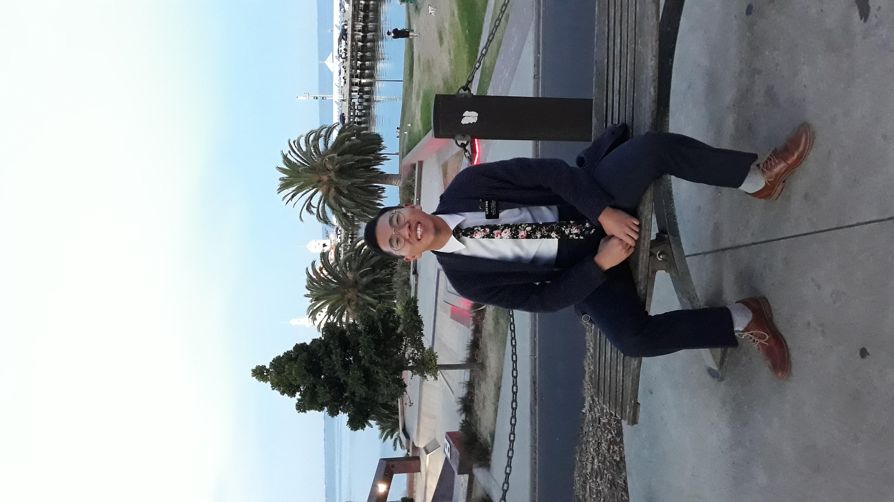

Gideon Kwon
I am from South Korea. I am 25 years old. I served my mission in Melbourne Australia. I have been here in BYUI for about 2 years now.
I like to cook and to work out!
I am from South Korea. I am 25 years old. I served my mission in Melbourne Australia. I have been here in BYUI for about 2 years now.
I like to cook and to work out!